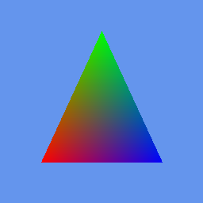
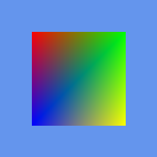
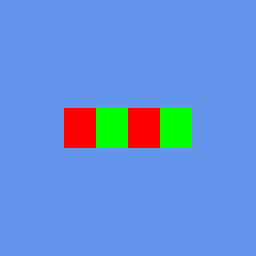
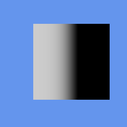

Verification & Known Issues
Every count on this page is a count of test definitions, not a pass rate. The numbers come from counting GoogleTest macros in the source tree and test registrations in the CMake files. A static count cannot tell you how many of those tests pass — that needs a run. If this page ever disagrees with what ctest prints on your machine, ctest is right. The few executed results quoted below are labelled CNA-recorded, carry their date and configuration, and were not re-run by this site.
Snapshot after the 0.1.0 release. This page describes CNA snapshot 3b43bd86 (27 October 2026, branch next), a development snapshot 948 commits after the v0.1.0 release; the product version string is still 0.1.0. Every number was recomputed from that checkout with the commands in Reproducing these numbers yourself. Alpha.1 figures appear only as history. Nothing on this page was built or executed by the site authors unless it says so.
How CNA is verified
An XNA reimplementation can pass its own test suite perfectly and still be wrong, because the tests encode the author's belief about what XNA does. CNA works around that with several layers, and the ones that matter most compare against something outside the project. Each layer answers a different question, so the table states the scale of each one next to what it does not establish.
| Layer | What it checks | Scale |
|---|---|---|
| Unit tests (GoogleTest) | Math, geometry, curves, packed vectors, game-loop semantics, state objects, input, audio, networking, content readers, the build-time content pipeline. Runs headless. Since alpha.1 each module also builds its own focused test executable (22 of them, for example CnaMathTests) next to the aggregate CnaTests. |
900 CNA-owned C++ files under test paths, excluding vendored third_party; 857 contain 11,927 static GoogleTest definition macros (alpha.1: 568 files, 539 with macros, 8,263 definitions). The instantiated run depends on configuration. |
GPU pixel-readback tests (ctest) |
Renders a scene on a real device context, reads the framebuffer back to the CPU, and asserts on actual pixel values. This is what catches "the shader compiles but draws the wrong thing." | CTest registrations are generated from the selected renderer, platform, audio, feature flags and available dependencies. Inspect each configured tree with ctest -N. A further 599 standalone *_test.cpp pixel programs under examples/ are not in the 900 / 11,927 figures. |
| XNA 4.0 oracle corpus | Scenes rendered by real XNA 4.0 and diffed against CNA's DIRECTX9 output at tolerance 0. Ground truth is the actual Microsoft runtime executed under Wine with DXVK on Linux — not anybody's reading of it, and not a native Windows machine. |
39 scenes (256×256, HiDef) under tools/xna-oracle/, each with a reference PNG captured from real XNA; plus 7 unbound-texture scenes and a 17-format channel-expansion table that sit outside every diff denominator |
| Differential testing against FNA | A harness links a real, running FNA build and dumps reference values to JSON; a matching C++ tool dumps CNA's; a script diffs them key by key. Ground truth comes from executing FNA, not from reading its source. It is a manual developer workflow — not a CTest and not in CI — and compares values (enums, state presets, packed vectors, viewport), not rendered scenes. Since alpha.1, FNA has also produced checked-in compiled-effect fixtures (reflection, render state and pixels for seven effects) that CNA's CTest gtests replay. | tools/fna-reference/, tools/cna-reference/, scripts/compare-fna-reference.py, tests/fixtures/compiled-effects/ |
| API purity, checked by the compiler | Every declaration that is not part of XNA 4.0 is tagged CNAEXT. Under the CNA_STRICT_XNA_API purity mode the tag expands to [[deprecated]], so with -Werror=deprecated-declarations a call to a CNA extension stops the build. That strict compile check covers the Microsoft::Devices and Sensors surface only, and has a negative twin that must fail to compile. A compile-time signature-freeze file pins the public signatures of the Input module (56 static_asserts). The C API has its own ABI baseline (196 struct layouts, 3,212 exported symbols). |
CNA_STRICT_XNA_API, tools/devices/StrictXnaApiSurfaceCheck.cpp, StrictXnaApiSurfaceLeakCheck.cpp, PublicApiInputSignatureFreezeTests.cpp |
| Cross-renderer parity fixtures | Renderer-neutral programs that issue only public XNA calls and state their expected result in their own assertions, so several renderers are judged by the same oracle. The oracle is the fixture's assertions, not real XNA. | 32 fixtures registered for the three renderer families that opt in: EasyGL, WebGPU and SDL_GPU; the renderer-neutral conformance programs are also registered on SOFTWARE, FNA3D and HEADLESS |
| Content Pipeline oracle | Genuine XNA Game Studio 4.0 Refresh assemblies, run under Wine on .NET 4.0, dump the Content Pipeline API and record behaviour for graphics, packing, intermediate XML, models, media, audio and optimisation. CNA's build-time pipeline is compared with those recordings. | 128 public types, 708 inventoried members, 10 importers, 12 processors; 152 recorded differential cases; 14 CTest gates |
| glTF conformance corpora | A fixed corpus of glTF assets rendered per renderer and compared with that renderer's own committed goldens (determinism and regression), plus a small thresholded comparison with the Khronos sample renderer. | 148 assets = 140 captured + 8 safely rejected; 13-asset Khronos comparison subset |
| Coverage generators | Scripts that count what exists: the XNA 4.0 runtime API census, the Content Pipeline API census and the C API symbol inventory. These measure representation — a declaration is present — not behaviour. | 3,627 / 3,627 runtime members; 705 / 705 pipeline members; 8,134 in-scope C API symbols |
What the test counts actually count
Static source inventory, instantiated GoogleTest cases, CTest registrations and executed results answer different questions. This snapshot deliberately keeps them apart.
| Number | What it counts |
|---|---|
| 900 files / 11,927 macros | CNA-owned C++ files under test paths (vendored third_party excluded) and static GoogleTest-family macro definitions. Of the 900 sources, 857 contain at least one counted macro. The macros split as TEST 8,859, TEST_F 2,859, TEST_P 161 and TYPED_TEST 19, and 106 INSTANTIATE_*_P lines mean parameterised cases outnumber their static definitions. Parameterisation, conditional compilation and renderer-specific targets mean this is not an executable case count or pass result. Alpha.1 counted 568 / 539 / 8,263 with the same commands. |
| 599 standalone pixel programs | Files named *_test.cpp under examples/: renderer readback and pixel programs with their own main(), registered through the renderer test macro. They are the bulk of the GPU pixel-readback tests and are not counted in 900 / 11,927 (alpha.1: 1,232). The C API's consumer tests are separate programs with their own main(): 97 .c files under test paths are not counted at all, and the six C++ files under modules/c-api/tests are excluded from CnaTests. |
84 Python def test definitions |
Tests for the verification and generation tooling itself (among them the C API route generator, coverage scope and ABI baseline, the XNA runtime-surface audit and the glTF fixture validator), in eight files; a plain search for def test can also match a helper whose name starts with test, so treat it as an upper bound. Alpha.1 had four in one file. Separately, 45 add_test policy gates are declared in cmake/Tests/ModuleProbes.cmake (module link closure, renderer identity registry, refusal of unsupported renderer names, display isolation, C API generation and more). |
| Build-local CTest inventory | ctest --test-dir <build> -N is authoritative for a configured tree. Single vs multi renderer, test/example options, platform, audio and detected dependencies all change the result. GoogleTest cases are discovered at test time, so no CTest total can be derived from the source tree and this page publishes none. |
None of these numbers is a claim that the tests pass. They are static counts, reproducible with ripgrep and a look at the CMake files — see Reproducing these numbers yourself. Deliberately absent from this page: per-renderer test counts and per-renderer line counts. CNA does declare a maturity (Production, Supported or Experimental) and a category for each renderer in code, but those are the project's own declarations, not measurements, so this page does not present them as verification results.
CNA-recorded executed runs
The project's own documents record a handful of executed runs. They are per-configuration and per-date, none was re-run here, and there is no universal pass count.
| Recorded | Configuration | Result as CNA recorded it |
|---|---|---|
| 2026-10-10 | The 0.1.0 release: cmake-build-multi (OPENGLES3 default plus the other renderers of that release, Debug, tests on), Debian 13, GCC 14.2.0 | 11,509 tests: 11,310 passed, 192 skipped, 7 failed (three pre-existing, three Wine-display limitations, one timing-sensitive test that passed three of three re-runs) |
| 2026-10-17 | Full Debug runs at the end of the stabilization pass, on CNA’s private runner (Mesa RADV) | cmake-build-multi (OPENGLES3 default with OPENGL33, WEBGPU, SDL_GPU, FNA3D, SOFTWARE, HEADLESS, STUB and the C API) 11,433 tests, 1 failed, 195 skipped; SDL_GPU 11,284, none failed; WEBGPU 10,964, none failed; SOFTWARE 10,982, none failed; FNA3D 10,806, 2 failed (both pass alone) |
| 2026-10-17 | MinGW-w64 Release build of DIRECTX9 under Wine | CnaGraphicsTests.exe in eight shards 2,688 of 2,688; the DIRECTX9 suite 59 of 59 without its compiled-effect test with DXVK 2.6.0, 60 of 60 twice with DXVK 3.1.1 |
| 2026-10-24 | CNA/cna-demos repair checkpoint (batch 8; demo tree built from a CNA commit shortly before this snapshot) | 719 demo IDs: SOFTWARE 664 pass / 4 fail / 48 skip / 3 not run, OPENGLES3 706 / 3 / 7 / 3; serial CTest of the demos 684 pass, 48 skip, 0 fail |
Renderer coverage is configuration-scoped
CNA exposes 10 renderer identities across 8 implementation families (the three GL-profile identities share the EasyGL family). Single-renderer builds remain the default, while CNA_GRAPHICS_RENDERERS can link a compatible set for runtime selection. A name outside the 10 is a configure-time error, never a silent fallback. Both build shapes affect verification:
- A green single-renderer run describes the selected family, not the other 7 families.
- A multi-renderer run verifies the compiled set and runtime selection/fallback paths; it does not make every renderer share one capability contract.
- Only the default gets the project-wide
CNA_RENDERER_*definition. Renderer-present test definitions identify every family compiled into the test target. - 10 identities are not 10 equally complete renderers.
SOFTWAREis a bounded CPU renderer,STUBrenders nothing, andHEADLESSvalidates and traces calls but produces no pixels.
Read evidence at its real scope. The Windows-only DIRECTX9 and SDL_GPU’s Direct3D 12 driver have Linux/Wine evidence and a manual native-MSVC workflow, not a native-hardware claim; SDL_GPU, the default on Windows, macOS and iOS, is qualified on Linux and under Wine only. Capability reporting has improved per family, but the common default still returns true for the original capabilities unless a renderer narrows them; MultiStreamVertexInput, CompiledEffects, FloatRenderTargets and HalfFloatRenderTargets are explicit false-by-default gates, and at the device level six answers are derived from separate checks. Only DIRECTX9 still relies on the inherited default wholesale.
Pixel evidence by family
What kind of pixel-level evidence each family has in the source tree at this snapshot. A registered test is not a passing test; this table says what exists, not what is green.
| Family | Evidence that exists | Not established |
|---|---|---|
DIRECTX9 | CTest D3D9_XNA_Diff renders all 39 oracle scenes and diffs them against the real-XNA references at tolerance 0, through Wine and DXVK in a MinGW cross-build tree | Native Windows; not in any workflow |
| EasyGL (three GL profiles) | Committed golden images; CTest EasyGL_XnaLineCoverage (two oracle scenes); 32 parity fixtures; EasyGL glTF goldens, the one L7 set CI runs | A current whole-corpus oracle result |
SOFTWARE | CTest Software_XnaLineCoverage (two oracle scenes); a display-free whole-corpus measurement script; the renderer-neutral conformance programs; glTF goldens (recorded, not CI-run) | Any CTest-enforced byte-exactness (the two-scene CTest fails only on a render failure); byte-exactness beyond the two line scenes |
FNA3D | CTest Fna3d_XNA_Oracle renders all 39 scenes; FNA-recorded compiled-effect fixtures replayed by gtests | Pixel equality: the CTest gates only that scenes render |
SDL_GPU, WEBGPU | Each has its own registered readback tests and runs the 32 parity fixtures; both run in the glTF stride CI job | Comparison against real XNA beyond individual fixtures; for SDL_GPU, any qualification on Windows, macOS or iOS hardware |
HEADLESS, STUB | API bookkeeping and validation; no pixels by design | Anything about how output looks |
The XNA 4.0 oracle corpus
This is the strongest verification claim CNA can make, so it is worth being exact about what it is — and about which renderer it applies to, on which machine.
Under tools/xna-oracle/ sit 39 scenes (256×256, HiDef, 65,536 pixels each) together with 39 reference PNGs captured from real XNA 4.0: the genuine Microsoft runtime, executed under Wine with DXVK on Linux (a 32-bit Wine prefix, DXVK 2.6, an AMD Radeon 780M through RADV) — not on Windows. CNA renders the same scenes and the images are diffed pixel for pixel at zero tolerance.
| Reference asset | Count | Role |
|---|---|---|
| Diff-corpus scenes and PNGs | 39 + 39 | The denominator of every whole-corpus comparison. Nine scenes drive SpriteBatch; the others cover the five stock effects, fog, all four primitive types and all eight alpha-test comparisons. |
| Unbound-texture scenes and PNGs | 7 + 7 (64×64) | Measure what a stock effect samples from a texture that was never bound (opaque black). Deliberately outside every script's scene glob; consumed as hard-coded centre-pixel expectations in unit tests. |
| Channel-expansion table | 17 SurfaceFormat rows | What real XNA returns for the channels a format does not store. A text table, not a scene. |
| Renderer | Scenes matched at tolerance 0 | What CNA's tooling actually gates |
|---|---|---|
DIRECTX9 | Recorded as 39 / 39 Pixel-exact through Wine + DXVK | CTest D3D9_XNA_Diff fails on any scene that does not render or differs by one channel value in one pixel — but only in a DIRECTX9 cross-build tree. The last consolidated dated report covers 31 scenes (later per-scene notes record the rest). |
SOFTWARE | 18 / 39 byte-exact; 30 / 39 within one channel value (measured 2026-09-11) | Only two line scenes are covered by a CTest (Software_XnaLineCoverage). It renders them and diffs them at tolerance 0, but its script exits non-zero only if a scene fails to render or has no reference image; a pixel difference is printed as DIFF, not failed. CNA records both scenes as byte-exact (2026-09-11). |
| EasyGL (the shared GL-profile implementation) | 10 / 39 (measured 2026-08-11, before later EasyGL pixel-centre and clip-depth fixes; the only later recorded count, 9 / 39 for the OPENGLES3 leg of a multi-renderer run on 2026-08-15, predates them too) | Exact gate on the same two line scenes only (EasyGL_XnaLineCoverage) |
FNA3D | 10 / 39, none failed to render (measured 2026-08-11, Mesa llvmpipe, OpenGL driver) | CTest Fna3d_XNA_Oracle gates only that every scene renders; pixel differences are reported, not failed |
"Pixel-exact" is a statement about DIRECTX9 and nothing else. Specifically, about DIRECTX9 executed through Wine and DXVK on Linux: it is deliberately held to a byte-identical authenticity bar because it is the renderer that targets XNA's own Direct3D 9 behaviour, and the reference images came from the same DXVK path. It is not a statement about Direct3D 9 on native Windows hardware and drivers — that re-run is still an open, human-only task in CNA's own plan. No other renderer is held to that bar: they are measured against the corpus, not gated, except for two line scenes on EasyGL (any difference fails the test), the same two scenes on SOFTWARE (diffed at tolerance 0, but only a failure to render fails the test) and a render-only check on FNA3D. The Software, EasyGL and FNA3D figures above are dated measurements, and no workflow runs the whole corpus. CNA does not claim that all renderers are pixel-perfect, and neither should anyone quoting this page.
The corpus covers 39 scenes, not the API. It is ground truth for what it covers and silent about everything else.
The short, honest version. CNA keeps 39 renderer-neutral test scenes (256×256, HiDef) with reference images captured by running the genuine Microsoft XNA 4.0 runtime under Wine with DXVK on Linux; a further 7 unbound-texture scenes and a 17-format channel-expansion table were measured the same way. The repository records all 39 scenes as pixel-exact on the DIRECTX9 oracle path — the same Wine and DXVK stack, at zero tolerance. The last consolidated dated divergence report covers 31 of them, and the remaining scenes are recorded in later per-scene notes. No 39-scene run was executed for this documentation, and the result has not been repeated on native Windows. No other renderer is held to pixel-exactness. No workflow runs the whole corpus.
Where the 39 / 39 comes from. It is a record kept in CNA's repository, not a measurement made for this page. The oracle README states that all thirty-nine scenes are pixel-perfect on the original D3D9 path, per-scene notes in CNA's planning record show zero differing pixels for the scenes added after the first 31 (the corpus grew from 31 to 36 to 39 scenes in July 2026), and the CTest D3D9_XNA_Diff iterates all 39 scenes at zero tolerance inside a DIRECTX9 cross-build tree. The last consolidated dated divergence report, docs/d3d9-divergence-report.md (15 July 2026), covers 31 scenes and was never updated, and no committed dated log of a 39-scene run exists. The authors of this documentation did not run the oracle, so read the figure as “recorded by the project”, with the Wine + DXVK host as its evidence boundary.
Eight of the thirty-nine
Every image below was produced by the real Microsoft XNA 4.0 runtime, not by CNA and not by hand. CNA's DIRECTX9 renderer draws the same eight scenes and the diff must come back empty at --tolerance 0. They are reproduced throughout the tutorials where they illustrate the technique being taught. The images on this page are byte-identical to the references at this snapshot.

Vertex-coloured triangle — see Tutorial 31.

Triangle strip — see Tutorial 40.
Unlit textured quad — see Tutorial 32.
The same quad with lighting on — see Tutorial 32.
Alpha test — all eight comparisons are in Tutorial 54.

Wrap texture addressing — see Graphics State.
Fresnel-weighted reflection — see Tutorial 56.

Four-bone skinning, per-pixel lit — see Tutorial 57.
These are deliberately austere scenes. A corpus like this is useful precisely because each frame isolates one piece of behaviour, so a diff that fails points at something specific. It is not a demonstration of what CNA can render — for that, see the demos. To run the comparison yourself, and to see where it can mislead you, follow Tutorial 161: Diffing a Renderer Against the XNA Oracle.
Independent FNA evidence
The oracle corpus compares CNA with real XNA. A second, independent check compares CNA with real FNA, by executing it:
- Value-level differential harness (manual).
tools/fna-reference/runs the realFNA.dllunder Mono and dumps values as JSON;tools/cna-reference/CnaReferenceDump.cppdumps CNA's;scripts/compare-fna-reference.pydiffs them. Default categories are non-rendering APIs, PackedVector and Viewport; the harness covers 21 enums, 16 state presets, 17 PackedVector types and viewport project/unproject. CNA's own document describes it as a manual developer workflow, not registered as a CTest. - FNA-recorded compiled-effect fixtures (replayed automatically). Since alpha.1, an FNA run produced checked-in JSON for seven compiled effects — reflection, render state and pixels. CTest-registered gtests replay them, and the EasyGL and SDL_GPU compiled-effect tests refer to them. Pixel comparison uses a ±3 channel tolerance on 8×8 flat-input renders. This is the only committed FNA-executed rendering evidence, and it covers compiled effects only — not sprites and not 3D scenes.
It is therefore not an automated regression gate against FNA, and not a scene comparison.
What the corpus does and does not prove
- Proves: for these 39 scenes, on the reference machine, CNA's
DIRECTX9path reproduced the pixels the genuine XNA runtime produced through the same DXVK stack. - Does not prove: anything about other renderers, native Windows drivers, scenes outside the corpus, audio, input, content loading or any API behaviour that does not reach a pixel.
- Does not run automatically: no workflow is dedicated to the corpus and none executes a whole-corpus script. The whole-corpus exact check exists only in a DIRECTX9 cross-build tree and needs Wine and DXVK. The two-scene EasyGL line test is an ordinary CTest that the general Linux job's unfiltered
ctestcould reach, but that job does not install Pillow, which the test imports, so whether it runs there was not verified. - Is not a wide net:
scripts/xna-diff.pydefaults to--tolerance 0on every RGBA channel. Its optional extended-policy flags exist, but no script at this snapshot uses them.
What CI covers (and what it doesn't)
The repository holds 18 workflow files defining 25 jobs. Sixteen trigger automatically on pushes and pull requests to next, develop and main; d3d-windows-ci.yml is manual dispatch only, and content-pipeline-windows-ci.yml runs on pushes to its own branch plus manual dispatch. They are not interchangeable: some run focused suites, some are source/coverage gates, some only build or link. File count is not a pass count — whether the current jobs are green was not verified here, beyond the individual runs CNA records.
| Area | Evidence at this snapshot | Important boundary |
|---|---|---|
| General Linux | general-tests-ci.yml runs an unfiltered ctest on OPENGLES3 under Xvfb :99 and fails on any failing test (it has no known-failure allowlist any more) or on a dirty checkout; input-ci.yml runs three rows (OPENGLES3, ASan+UBSan on OPENGLES3, SDL_GPU); devices-tests.yml and a 32-bit arithmetic lane add focused suites | It covers one renderer family; the others have narrower, renderer-specific lanes or none. |
| glTF | gltf-renderer-stride-ci.yml: L0–L6 and stride conformance on STUB, HEADLESS, OPENGLES3, SDL_GPU (on lavapipe), WEBGPU and SOFTWARE, plus an l7-corpus job that replays the EasyGL goldens; gltf-sanitizers-ci.yml: ASan+UBSan, Draco on and off | The Software L7 golden set is recorded, not CI-run. The L7 harness partly lives in a separate, pinned viewer repository. |
| Runtime renderer selection | multi-renderer-ci.yml exercises the HEADLESS;SOFTWARE;STUB set and selection/fallback contracts, plus a single-renderer control | Only compatible families can share a binary. |
| Emscripten and browser | emscripten-multi-renderer-ci.yml links WEBGL2;WEBGPU into one WebAssembly bundle and checks both renderers and the JavaScript selection surface are in it | The lane establishes configure/build/link, not browser behaviour. |
| Platform abstraction | platform-ci.yml has four jobs: a contract matrix (SDL3 with OpenGL ES 3, SDL_GPU, WEBGPU and Software, which also runs the SDL3 window suite on SDL’s x11 driver under Xvfb and its wayland driver under a headless Weston; Headless; Terminal), an SDL-free Headless + ALSA job, an SDL-enable matrix and sdl3-windows (native MSVC, manual) | Virtual servers only; no real desktop compositor. No workflow covers Android. |
| Apple | apple-ci.yml (macos-26): Apple CMake layer check, a macOS SOFTWARE build with portable tests and an .app launch, a gating SDL_GPU-on-Metal smoke set, iOS device final links and iOS Simulator launches with SOFTWARE, and non-gating iOS SDL_GPU legs | No physical-iOS-device claim; the SDL_GPU leg had not recorded a run at this snapshot, and no Apple hardware run of the current renderer set is recorded. |
| Native C API | Six workflows check the ABI baseline, header compatibility, coverage inventory, generated routes, limitations matrix and release gate | All six are build-free checks: no workflow builds the C library. The release gate itself reports "Not ready" (633 planned public C++ declarations without a C mapping). CNA’s own development trees build and test the library locally. |
| Windows | A native MSVC workflow builds and runs the DIRECTX9 suite and an SDL_GPU Direct3D 12 smoke set; a separate MSVC workflow builds the content pipeline | The Windows lanes are manual dispatch, not automatic merge gates; CNA records the SDL_GPU leg as not run yet. |
Four distinctions prevent overclaiming:
- A declared workflow is not evidence until it runs and is green; alpha.1's general job failed at configure on a stale renderer name, and that has since been fixed — a reminder to check the run, not just the file.
- A configure or final-link lane does not prove runtime behavior.
- A simulator or headless-browser result does not prove physical-device or every-GPU behavior.
- Android has source and NDK support but no workflow at this snapshot.
What no workflow runs: the whole XNA oracle corpus, the FNA differential harness, the WebGPU and SDL_GPU parity-fixture CTests, and the Software glTF golden set.
Verification infrastructure added since alpha.1
Most of the verification machinery below did not exist at v0.1.0-alpha.1. Each row says what it is, where it lives, and the boundary that keeps it from being over-read.
| Infrastructure | What it is | Boundary |
|---|---|---|
Content Pipeline oracletools/xna-pipeline-oracle/, tests/reference/xna40/ |
Genuine XNA Game Studio 4.0 Refresh assemblies run under Wine dump the pipeline API (128 public types, 708 public and protected members, 10 importers, 12 processors, 47 processor properties, 18 source extensions) and behaviour oracles. A 152-case differential file records real-XNA outputs. Fourteen CTest gates in cmake/XnaPipelineParityGates.cmake are driven by parity_report.py --check and inputs_matrix.py check. |
Covers the build-time content pipeline only. The recordings are committed, but regenerating them needs the genuine XNA Game Studio assemblies under Wine, which are not redistributable. |
XNA sample-asset sweep CNA-recordedtools/xna-sample-sweep/ |
Real Microsoft-pipeline .xnb files built from public XNA samples, compared with what CNA's pipeline produces from the same sources. CNA's recorded run 66 (2026-09-11): 7,726 reference files in 129 samples across 433 build units; 4,337 byte-identical (56.1%), 747 semantically identical, 815 accepted differences (each machine-audited), 1,797 that need a sample-defined pipeline component, 9 environment gaps, 21 references no longer present, 0 unexplained. |
The reference corpus lives outside the repository and cannot be reproduced from a clone. The numbers are the project's own record of its own run. |
Seven real-XNA behaviour probesspikes/xna-*-spike/ |
C# programs run on the genuine XNA runtime under Wine and DXVK, each answering one question CNA could not settle from its own tests: diffuse-colour clamp, environment-map-amount clamp, multisample antialiasing, pixel-centre convention, pixel centres on a multisampled target (added 26 October 2026: XNA keeps integer centres there too), SpriteBatch sampler 0, and vertex-colour specular. Each probe records its own result in its README. |
One-question probes, not regression gates. |
Cross-renderer parity fixturesmodules/graphics/examples/parity/ |
32 renderer-neutral fixtures. Each states its expected result in Expect* assertions and is registered as <Renderer>_Parity_<fixture> for every renderer that calls cna_register_parity_fixtures(): EasyGL, WebGPU and SDL_GPU. Two scripts additionally diff whole frames between two builds. See Tutorial 160. |
The oracle is the fixture's own assertions, not real XNA. A renderer's fixtures only exist in a build configured for that renderer. |
GPU test isolationcmake/TestDisplayPolicy.cmake |
CNA_TEST_DISPLAY is empty by default, so window-creating tests inherit the caller's DISPLAY instead of opening on your live desktop; naming :0 needs CNA_TEST_ALLOW_LIVE_DISPLAY=ON; a Wayland guard keeps tests off the live compositor. tools/platform/run_gpu_tests_private.sh runs a build's tests inside a private headless Weston with a rootful Xwayland and the real GPU, and the CTest CnaTestDisplayIsolation checks a configured tree's registrations. CNA's plan records that roughly 990 registrations carried an explicit DISPLAY before the change. |
A safety and hygiene mechanism, not a correctness result. The private runner needs Weston and Xwayland and skips (exit code 77) without them. |
Bounded-memory GoogleTest runnertools/tests/run_gtest_bounded.sh |
Shards a GoogleTest binary (default 200 tests per process, --max-parallel), reports a shard killed by a signal as KILLED and fails the run instead of reporting a partial pass, and cross-checks its XML and text counts. Its header records that CnaTests (10,564 tests on WEBGPU) could not run in a single process there: about 1,115 MB of peak memory per 200 tests on WEBGPU, several times what another GPU renderer needed in the same measurement. |
A way to run a large binary on a small machine. It creates no display of its own, and the memory figures are the project's own measurements. |
Focused per-module test executablescmake/UnitTests.cmake |
22 focused targets (for example CnaMathTests, CnaContentTests, CnaGraphicsTests, CnaStorageTests) built from the same objects as the aggregate CnaTests. At alpha.1 only CnaTests existed. |
Developer iteration targets, excluded from all and not extra CTest registrations, so the full suite is not run twice. |
| Static policy gates | 38 add_test calls in cmake/Tests/ModuleProbes.cmake (module link closure, the renderer identity registry, refusal of unsupported renderer names, runtime-renderer discipline, renderer combinations, shader-package reproducibility, C API gates, display isolation), CNAEXT guard, matrix, naming, [[nodiscard]] and Doxygen checks, and a provenance gate. |
They pin policy and structure. None of them renders a pixel. |
Window-system suitestools/platform/ |
CnaPlatformSdl3X11Tests and CnaPlatformSdl3WaylandTests run the SDL3 window suite on a private Xvfb and a private headless Weston, asserting the native handle each SDL video driver hands a renderer; a process-exit harness and Windows helper scripts sit beside them. |
Virtual servers, not a real desktop session; on Windows only the manually dispatched MSVC job and Wine runs. |
glTF conformance corpora
The glTF asset corpus still lists the same assets as at alpha.1. tests/assets/gltf/manifest.json lists 148 distinct assets in 15 groups (container, accessors, component types, topology, normals, transforms, materials, textures, skinning, animation, cameras, lights, scenes, Draco, robustness).
- L7 rendered-pixel reports. Each report covers all 148 assets: 140 captured and 8 safely rejected. There are two sets of 140 committed PNG goldens at this snapshot, one for EasyGL on
OPENGLES3(Mesa llvmpipe) and one forSOFTWARE, captured at 512×512 with RGB and alpha tolerance 0. - What that proves. The goldens are renderer-owned: each renderer is compared with its own past output. That establishes determinism and regression detection, not agreement with a reference renderer.
- The independent comparison is small. 13 assets are compared with the Khronos glTF-Sample-Renderer (pinned to commit
863b981) using mask-IoU, coverage and RGB mean-error thresholds — thresholded, not exact. - In CI. Only the EasyGL/
OPENGLES3L7 job runs, through a pinned external viewer build; the Software set is recorded, not CI-run.
Coverage reports and what they measure
CNA generates several coverage reports. Read the third column before quoting the second.
| Report | Result | What it does and does not measure |
|---|---|---|
XNA 4.0 runtime API representationdocs/xna-4-runtime-member-coverage.md, generated by tools/audit_xna_runtime_surface.py |
331 / 331 public types (13 in Framework.Design); 3,627 / 3,627 documented members: 253 constructors, 1,518 methods, 1,040 properties, 753 fields, 63 events. Classified 1,746 exact, 1,823 semantic, 58 host-language substitutions, 0 missing. |
Representation only. A declaration is present in CNA's public headers (parsed with Clang) for each member in Microsoft's runtime XML documentation and DLL metadata. The report itself states that API representation does not establish behavior. The Microsoft inputs are outside the repository, so it is reproducible only with them. (Baseline before closure: 3,463 / 3,627.) |
Content Pipeline API paritydocs/xna-content-pipeline-parity-report.md |
128 / 128 types; 705 / 705 members (708 inventoried, 3 delegate-plumbing members not counted); 27 / 27 enum values; 10 / 10 importers; 12 / 12 processors; 47 / 47 processor properties; 18 / 18 source extensions implemented and tested. | Representation, even though many notes cite oracle measurements. It describes the build-time content pipeline; CNA still loads content at runtime through its own ladder (.xnb, then .cnb, then loose files). |
C API coverage inventorydocs/c-api/COVERAGE.md, gate CApiCoverageMatrix |
466 headers, 8,134 symbols: 7,033 implemented, 15 partial, 633 planned, 453 not applicable. ABI 0.50.0 (experimental). The committed release-gate report reads Not ready: 9 of 10 criteria met, the unmet one being "no public C++ symbol is unaccounted for" (the 633). The gate was not re-run for this page. | Maps CNA's own C++ declarations to C ABI rows. "Implemented" means a mapped route, not a behaviour test, and the figures are not comparable with alpha.1's (ABI 0.7.0). No CNA CI job builds the library; CNA’s own development trees and CNA.NET build and use it on Linux. |
Two smaller per-class tables (GraphicsDeviceManager against FNA, and Microsoft::Devices with Sensors against the MSDN pages) are qualitative member-by-member lists, not percentages of anything. CNA publishes no line-coverage figure at this snapshot. A 3,467 / 3,627 figure in an older CNA document is a superseded historical snapshot; the documents that carried it were removed, and the generated report above replaced them.
Where coverage is thin or absent
These are not "lightly tested", and it is better that you hear it here.
Storage. The storage module now carries 70 test macros (alpha.1: five; the previous snapshot: 14), most added by the demos and consumer repair campaigns: path containment including dangling-symlink escapes, XNA’s argument, path and sharing defaults, container construction and deletion errors, and the asynchronousBegin/Endresult contracts. It remains a module whose behaviour is checked mostly through error and path contracts. The implementation is realstd::filesystemIO.- Renderer evidence remains per family. The 18 workflows include focused renderer gates, but they do not execute every capability of all 8 implementation families on every supported target; no workflow names
OPENGL33orFNA3D, andDIRECTX9appears only in a manual Windows workflow. - Optional layers need their own configurations.
CNA_CNAEXT,CNA_DEVICES,CNA_DIAGNOSTICS,CNA_BUILD_INSPECTORandCNA_BUILD_C_APIdefault to OFF; a default build says nothing about them. No workflow builds the C API library, and its own release gate says "Not ready". - Representation is not behaviour. 3,627 of 3,627 members being present says nothing about whether each behaves like XNA. Behaviour is checked only where the oracle corpus, the FNA harness, the parity fixtures and the unit tests reach.
- The XNA oracle diff. Covered above, and worth repeating: the project's most rigorous check is not automated.
Every current defect has its own page. The list below summarises the limitations at this snapshot. The complete, per-item record — current bugs, functional gaps, platform limitations and verification gaps, each with its expected and actual behaviour, source locations, evidence and a stable identifier — is the Known Issues area; the behaviour each subsystem is supposed to have is on the Deep Dives.
Current limitations
What follows is the current list of user-facing limitations at this snapshot. Every entry is a declared boundary — a capability CNA does not claim, or a documented deviation — rather than an open defect report. Each was re-checked against the snapshot's source where feasible; the ones that come from CNA's own notes and were not re-checked say so. Where an item once appeared here as a bug and has since been fixed or narrowed into a boundary, it moves to the last list below rather than standing as a warning.
Graphics and renderers
- Compiled effects are renderer-qualified. XNA/FNA D3D9 Effect Framework bytecode runs on six renderer families:
FNA3Dalways, and five opt-in build options that default to OFF (EasyGL, WebGPU, Software,DIRECTX9,SDL_GPU). A default configure therefore reportsCompiledEffectsfalse on 9 of the 10 identities. HLSL.fxsource is not compiled at run time; the build-time content pipeline can compile it through an external legacyfxcyou supply. MGFX and DXBC are rejected. - Runtime renderer selection is opt-in. A normal build still contains one renderer. Multi-renderer builds must use compatible sets, fallback is disabled by default, and selection latches once the first device has successfully created a renderer — a failed creation leaves the choice open.
- Cube faces inside a multiple-render-target set are refused on
DIRECTX9andSDL_GPUwithNotSupportedException, and onWEBGPU;HEADLESSaccepts them, and EasyGL andSOFTWAREimplement them. (Source reading.) SDL_GPUis the default on Windows, macOS and iOS but is qualified on Linux and under Wine only. It compilesShaderEffectout on Windows, Apple and the browser, has no occlusion queries, and appliesBlendState.MultiSampleMaskonly when the mask keeps every sample or none (any other is refused withNotSupportedException). It has never been built for iOS. CNA’s handoff lists no open renderer defect at this snapshot:SpriteSortMode::Immediatedraws each sprite with the texture as it is at itsDrawcall onSDL_GPUandWEBGPUtoo (recorded by CNA’sspritebatch_sort_mode_semanticsprogram on six renderers; not executed here).- Declared-experimental families stay bounded.
SOFTWAREandFNA3Dare declared Experimental (WEBGPUbecame Supported on 17 October 2026, verified on Linux and in headless Chrome only).SOFTWAREnever executes custom shader source and stays off-screen except on the terminal platform. - A missing 3D feature throws by default. Where a renderer lacks a 3D operation (
STUB, orTexture3DonHEADLESS), the call throws unless the game opts into the warn-and-stub mode, which returns a null object. SupportsCapability()still has a permissive legacy default. Renderers must narrow unsupported entries, and onlyDIRECTX9relies on the inherited default wholesale. Multi-stream input, compiled effects and float render targets are false-by-default because each requires explicit implementation; seventeen capabilities are defined (alpha.1: fourteen), and a separate capability-profile API reports features, limits and per-format usage.
Platforms
- Web has no save persistence at all. Under Emscripten the storage root (resolved from
XDG_DATA_HOME,LOCALAPPDATAorHOME, not fromSDL_GetPrefPath) lands in the default volatile in-memory file system, and a source search of this snapshot finds no IDBFS mount and noFS.syncfscall. Every save is discarded on page reload. - Video needs an FFmpeg backend. The
Video,VideoPlayerandVideoReadertypes exist in every build, but file-backed video throwsNotSupportedExceptionwithout a backend. FFmpeg is optional (CNA_ENABLE_VIDEO=AUTOby default) and is never built on Windows, Emscripten, Android or iOS; thereAUTOfalls back silently andONfails at configure. - Android is unverified. Source and NDK support exist, no workflow builds it, and CNA's dated status notes describe a failing NDK cross-build in a sibling repository. Current state was not checked.
- Network discovery is SystemLink only, and a no-op on Emscripten (raw UDP broadcast does not exist on the Web platform).
API members that always throw or no-op
- 15
Guideentry points — theShow*overlays andDelayNotifications— are documented no-ops. (TheBegin/Endmessage-box and keyboard-input pairs are not among them — those are real implementations.) - No public member is a
NotImplementedExceptionstub at this snapshot:Achievement::GetPicture(),PropertyDictionary::CopyTo(),NetworkMachine::RemoveFromSession()andBoundingFrustum::Intersects(Ray)are implemented. The one remaining throw isSpriteFontReader’s reload into an existing instance, a pathContentManagernever takes. - 3D audio accepts any positive number of
AudioListeners, but CNA's mixer has one stereo gain pair: the nearest listener decides attenuation, pan and Doppler, which approximates XACT's per-listener output matrices rather than reproducing them.
Content and decoding
.xnbfiles using Intel E8 preprocessing are not decoded (the LZX decoder's E8 step is unfinished, as in FNA).- DDS cube maps accept DXT1, DXT3, DXT5 and uncompressed 24-bit RGB/BGR only; DX10 headers, other packed layouts and HDR variants are refused.
.m4aand.aacare unplayable — the audio stack ships no AAC decoder.- An XACT wave bank containing XMA or WMA data does not throw: it logs to stderr and returns
nullptr, so the sound is simply missing. The XNBSoundEffectReaderpath was reported to throw instead; that was not re-checked here. - glTF retains unskinned rigid clips and factor-only PBR, validates required extensions and exposes structured import diagnostics. A mixed skinned model cannot also use
Tagfor extra rigid clips, so those tracks are omitted with a named diagnostic. The runtime importer fixes the unit scale at 1.0; only the offline tools scale.
Build-time switches
CNA_CNAEXT(the CNAEXT extensions:AsciiPostProcessEffect,CRTEffect,DepthEffect,DebugDrawand shader packages inCNA::Graphics, 11 public headers) defaults to OFF.CNA_DEVICES(the CNAEXT device layer) also defaults to OFF.CNA_BUILD_C_API,CNA_DIAGNOSTICSandCNA_BUILD_INSPECTORdefault to OFF as well.
No longer limitations at this snapshot
These appeared on this page at alpha.1 and no longer hold in the source, so plans built around them should be revisited.
Gameno longer has to be heap-allocated on the Web.Game::Run()now blocks through Asyncify, so a localGameobject is supported (CNA's own lifetime note records this contract).- FFmpeg is no longer a hard requirement on Linux and macOS, and the video types now link on Windows, Emscripten and Android instead of failing at link time.
- 3D audio no longer refuses a second listener (see the approximation noted above).
ResourceContentManageris no longer a pure stub; itsOpenStreamis implemented.- The alpha.1 CI and C API blockers are gone from the source: the general workflow's configure line no longer names an unsupported renderer, and the C API's renderer map now has one row per public identity. Neither says anything about whether those jobs are green or the C library builds — that was not verified here.
Deliberate deviations from XNA
These are not bugs and are not on a roadmap to be "fixed" — they are design decisions with real consequences for porting, so plan around them.
| XNA does | CNA does | Why it matters |
|---|---|---|
Ships custom shaders as compiled .fx bytecode |
Loads compatible Effect Framework binaries on qualified builds; also offers CNAEXT ShaderEffect |
Already-compiled XNA/FNA effects can be retained when the active renderer exposes CompiledEffects (8 renderer identities in six implementation families: FNA3D always, the other seven identities only with their family’s opt-in option, five options in all). CNA still does not compile HLSL source at run time or accept MGFX; the build-time pipeline can compile .fx through an external fxc. |
Builds .xnb files with a design-time content pipeline |
Reads .xnb at runtime; a separate build-time pipeline (cna-content, module content-pipeline) can now also write .xnb and .cnb |
The pipeline API is represented against the real XNA Content Pipeline assemblies (128 of 128 types, 705 of 705 members — representation, not behaviour) but is deliberately outside the runtime link closure, so a game does not link FreeType or FFmpeg because it exists. Runtime loading is a ladder: .xnb, then .cnb, then loose files. |
| Discovers XNB type readers by reflection | Each Load<T>() installs the readers its type needs, in a Game or in a stand-alone ContentManager; RegisterAllBuiltInXnbReaders() installs them all at once |
C++ has no reflection. There are 61 built-in readers (60 in a build without native 128-bit integers, which drops DecimalReader), and outside a Game none of them are registered until you make that call. |
| Selects a graphics device at runtime | Defaults to a compile-time renderer, with opt-in compatible sets through CNA_GRAPHICS_RENDERERS |
A multi-renderer binary chooses before device creation and may use explicit fallback. The build default and the active renderer are deliberately separate answers. |
Exposes Begin*/End* pairs on Storage and GamerServices that look asynchronous |
Runs the callback inline, before Begin* returns |
Faithful to XNA's own fake-async, but do not expect it to keep a frame moving. The work happens on the calling thread. |
Runs GamerServices against Xbox LIVE |
Persists achievements and leaderboard entries as JSON on the local disk, in a GamerServices folder under the storage root |
Your achievements and leaderboards genuinely survive a restart on that machine. What does not exist is the online half: no sign-in against Microsoft's servers, no matchmaking, no cloud sync. |
Supports Xbox LIVE matchmaking (PlayerMatch, Ranked) |
Implements SystemLink for real — genuine UDP with LAN broadcast discovery and measured RTT for QoS |
LAN multiplayer works across real machines. Internet matchmaking does not exist, and the other session types no-op rather than pretending. |
Reproducing these numbers yourself
Nothing here requires special access. Run these from the exact snapshot checkout (git checkout 3b43bd8687ed46523d873f9bec4b32bd8481dcb5), with ripgrep installed:
git rev-parse HEAD # 3b43bd8687ed46523d873f9bec4b32bd8481dcb5
# CNA-owned C++ source files under test paths (vendored code excluded) -> 900
rg --files -g '*.cpp' -g '!third_party/**' |
awk '$0 ~ /(^|\/)(test|tests)(\/|$)/' | wc -l
# Static GoogleTest-family definition inventory (not a pass count) -> 11,927
rg -n '^\s*(TEST|TEST_F|TEST_P|TYPED_TEST|TYPED_TEST_P)\s*\(' \
-g '*.cpp' -g '!third_party/**' | wc -l
# ...and how many of those files contain at least one such macro -> 857
rg -l '^\s*(TEST|TEST_F|TEST_P|TYPED_TEST|TYPED_TEST_P)\s*\(' \
-g '*.cpp' -g '!third_party/**' | wc -l
# The blind spot: standalone example pixel programs, NOT in the counts above -> 599
rg --files -g '*_test.cpp' -g '!third_party/**' | rg '/examples/' | wc -l
# Oracle corpus, null-texture scenes, format table, workflow files -> 39, 7, 17, 18
ls tools/xna-oracle/scenes/*.scene | wc -l
ls tools/xna-oracle/scenes/null-texture/*.scene | wc -l
grep -vc '^#' tools/xna-oracle/reference/format-expansion/xna-format-expansion.txt
ls .github/workflows/*.yml | wc -l
# What this configured build actually registers
ctest --test-dir build -NBuilding and running the suite needs the sibling repositories checked out next to cna/. They are separate clones, not submodules, and their versions matter: CNA’s configure step checks them, and this snapshot needs CNA and sharp-runtime on their next branches (the GitHub default branches hold the 0.1.0 release):
git clone -b next https://github.com/libcna/cna.git
git -C cna checkout 3b43bd8687ed46523d873f9bec4b32bd8481dcb5
git clone -b next https://github.com/libcna/sharp-runtime.git # required by every build
git clone -b v0.1.1 https://github.com/libcna/easy-gl.git # the three GL-profile renderers
git clone -b v0.4.1 https://github.com/libcna/meta-gl.git # needed by easy-gl
# FFmpeg is optional (CNA_ENABLE_VIDEO=AUTO). Install these only if you want video:
# libavcodec-dev libavformat-dev libavutil-dev libswresample-dev
cd cna
git submodule update --init # non-recursive is correct, and much faster
cmake -S . -B build -DCNA_GRAPHICS_RENDERER=OPENGLES3
cmake --build build --target CnaTests # or one focused target, e.g. CnaMathTests
# GPU-window tests inherit your DISPLAY (CNA_TEST_DISPLAY is empty by default).
# On a headless box give them a virtual one:
xvfb-run -a ctest --test-dir build --output-on-failureSwap OPENGLES3 for another identity to reproduce a different single-renderer slice, or configure a compatible CNA_GRAPHICS_RENDERERS set to exercise runtime selection. The resulting CTest inventory is the only count that applies to that configured build. (With CMake older than 3.28 the tests keep an empty DISPLAY; pass -DCNA_TEST_DISPLAY=:99 and start your own Xvfb instead.) To run one module, build its focused target and run it from the repository root; to run a big binary in bounded memory, or the parity fixtures, see Tutorial 160; to diff a renderer against the XNA oracle, see Tutorial 161.
Command traps worth knowing before you file a bug against your own shell history.
cmake --build build --target CNAno longer works.CNAis anINTERFACEumbrella target with no sources; buildCnaTests, a focused module target, a demo target, or justcmake --build build.D3D9,EASYGLandASCIIare not valid renderer values today and stop configure with aFATAL_ERRORthat lists the supported names. The Direct3D 9 name isDIRECTX9; the GL profiles are selected individually asOPENGLES3,OPENGL33orWEBGL2; and ASCII output is the CNAEXT post-process effectAsciiPostProcessEffect. Names are case-sensitive in CMake, and any name outside the 10 public identities is refused at configure time rather than substituted.ctest -L D3D9matches zero tests: the label isDIRECTX9. The oracle CTest keeps its historical name,D3D9_XNA_Diff, and carries theDIRECTX9label.- Two equivalent selection forms exist and must not be mixed:
-DCNA_GRAPHICS_RENDERER=<NAME>or-DCNA_RENDERER_<NAME>=ONwith exactly one switched on. - By default C++ consumers
add_subdirectoryCNA. At this snapshot an opt-in, relocatable C++ SDK can also be installed (-DCNA_INSTALL_CXX=ON, targetcna_cpp_sdk, install componentsSharpRuntimeandCNACpp) and consumed withfind_package(CNA CONFIG REQUIRED COMPONENTS ...); the experimental C layer has its ownCNACApicomponent. Neither was built here; see Building. - Configure presets available: 17 visible (
dev,dev-fast-debug,unit,unit-pch,unit-unity,release-modules,release-ipo,web,devices-asan,devices-tsan,devices-ubsan,macos,ios,ios-simulator,tests,multi-renderer,cnaext) plus one hidden base preset. Thetestspreset configuresOPENGLES3with tests and examples on.
Found a discrepancy between this page and what your build reports? That is worth an issue — the whole point of publishing these numbers is that they are checkable.
Deep dives on this topic
Long-form pages that explain the exact semantics, invariants and evidence behind this subject.
- C API evidence, coverage inventory and release gate — How far the evidence for CNA's C ABI 0.50.0 reaches, what each release-gate criterion really checks, what the gate reports for the 633 public C++ declarations still planned for C mapping, and how the coverage inventory classifies modules.
- Compatibility levels and the evidence vector — The distinct levels of XNA compatibility CNA keeps apart, the evidence vocabulary used across the site, what each renderer class can prove, and how to state a verification claim.
- Direct3D evidence: MinGW cross-builds, Wine translators and native Windows — How DIRECTX9, and SDL_GPU on SDL's Direct3D 12 driver, are built and tested off Windows: MinGW cross-builds, the DXVK and vkd3d-proton gates and their Wine prefixes, the manual Windows workflow and what each evidence tier proves.
- DIRECTX9: stock-effect bytecode, device lifecycle and oracle findings — How the XNA-fidelity renderer compiles Microsoft's stock effects, enforces GraphicsProfile from D3DCAPS9, recovers lost devices, handles targets and why its sprite projection is what it is.
- Evidence tiers of the native modern GPU renderers — What SDL_GPU and WEBGPU, the two renderers that drive a modern explicit GPU API, implement at this snapshot, what evidence backs each, why a capability bit is not evidence, and the defect shapes they exposed.
- glTF conformance: corpus, oracle ladder and evidence — The pinned glTF specification, the 148-asset generated corpus, the L0-L7 oracle ladder, renderer-owned pixel campaigns, the Khronos comparisons, the defect ledger and the milestone statuses.
- glTF feature matrix: importer, runtime and evidence — Every glTF 2.0 feature area with what CNA's import core does, what the runtime Model represents and which committed tests and layers provide evidence, at this snapshot.
- Oracles, tolerances and engagement gates — The oracles CNA uses (real XNA, FNA, derived tables, cross-renderer controls, own goldens), their authority and tolerances, and the gates that prove a Wine or browser run engaged.
- Test populations, counts and structural gates — Which test layer produced a CNA result, what each static count at 3b43bd86 counts, why no CTest total exists, and how identity, containment, inventory and mutation gates work.
- Tests, examples, presets and tools: what each verdict proves — What a green result from CNA's test corpus, examples, golden images, CMake presets and developer tools actually establishes, sorted by authority class, and how to read a result before citing it.
- Verification tiers: evidence forms, oracle authority and CI reporting — A decoding key for CNA verification claims: claim labels, what each evidence form establishes, which authority decides which question, what CI runs at 3b43bd86 and how to report it.
Known issues in this area
Current defects, gaps and limitations at this snapshot that touch this subject.
- CNA-BUG-247: The EasyGL L7 policy and report justify zero tolerance with 'all 137 renderable assets' while the report's own fields record 140 captured, byte-identical assets — The EasyGL L7 policy's justification, copied into its report, cites 137 renderable assets while the report records 148 assets, 140 byte-identical captures and 8 rejections.
- CNA-VGAP-001: Matrix camera builders have no XNA oracle and no full-matrix value test — CreateLookAt and the perspective and orthographic builders are asserted only on single terms and covered indirectly by consumer tests; CNA's XNA matrix oracle does not include them.
- CNA-VGAP-046: No automatic workflow runs the XNA reference-image corpus comparisons other than the EasyGL line pair, or the FNA value-differential harness — D3D9_XNA_Diff, Fna3d_XNA_Oracle and Software_XnaLineCoverage are in no workflow's test selection, and the FNA value-differential harness is manual because it needs mono and a built FNA.dll.
- CNA-VGAP-047: Test strength is never measured automatically: no coverage build, no scheduled fuzzing campaign and no mutation testing — No workflow or CMake option enables coverage instrumentation, the libFuzzer-capable harnesses are not CTests and no job or schedule runs them (their recorded campaigns were manual, one-time runs), and no source-mutation
- CNA-VGAP-057: EasyGL Task 933 (a full-backbuffer SpriteBatch draw breaking that frame's 3D rendering) rests on one recorded sample run: no test reproduces the reported scene, and the migration guide still lists it as open — CNA's graphics plan closed Task 933 on its 2026-08-23 run of the original sample (SAMPLE-005) after two synthetic investigations never reproduced the symptom; the plan is deleted, no checked-in test covers that scene, an